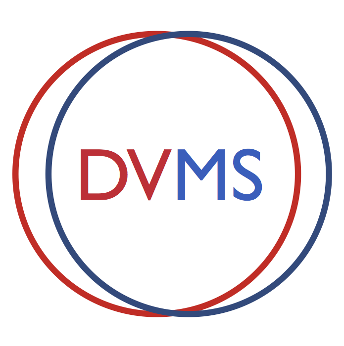
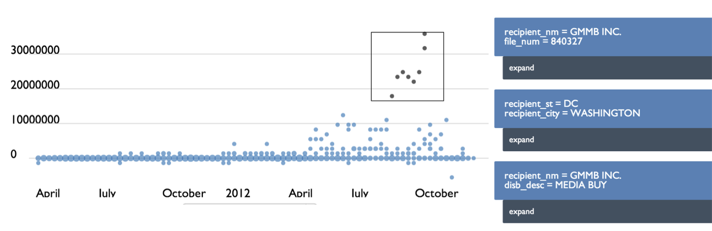
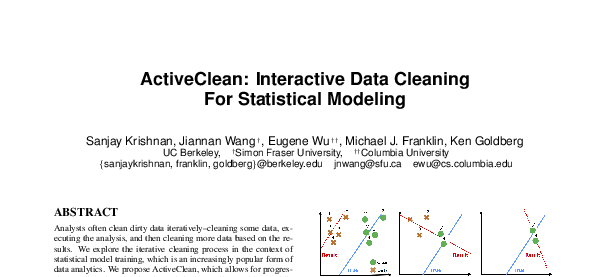

whois
|
Eugene Wu |
|
ApplyingWe are currently hiring great graduate and post-doctoral researchers. If you are interested, DO NOT EMAIL ME DIRECTLY. Click on the following links first. BioEugene Wu is broadly interested in technologies that help users play with their data. His goal is for users at all technical levels to effectively and quickly make sense of their information. He is interested in solutions that ultimately improve the interface between users and data, and techniques borrowed from fields such as data management, systems, crowd sourcing, visualization, and HCI. Eugene Wu recieved his Ph.D. from CSAIL at MIT, advised by the esteemed Sam Madden and Michael Stonebraker, in the database group. He spent the first half of 2015 at UC Berkeley's AMPLab before starting at Columbia University in Fall 2015. Formal and less formal (by @mstem) biographies. An obituary. He is supported by NSF 1527765. Recent News
Current Research AreasData Visualization Management SystemsA Data Visualization Management System (DVMS) integrates visualizations and databases, by compiling a declarative visualization language into an end-to-end relational operator pipeline that renders the visualization and is amenable to database-style optimizations. Thus the DVMS can be both expressive via the visualization language, and performant by leveraging traditional and visualization-specific optimizations to scale interactive visualizations to massive datasets.  Query ExplanationInstead of explaining and fixing data using data, which is a bit circuitous, we seek to both explain and repair incorrect data values by using the actual queries that modified the database.
Data Exploration and ExplanationVisualizations are excellent for exposing surprising patterns and outliers in data, however existing tools have no way to help explain those patterns and outliers. We are exploring systems to generate sensible explanations for outliers in analytics visualizations.  Data Cleaning for Data ScienceAnalysts report spending upwards of 80% of their time on problems in data cleaning including extraction, formatting, handling missing values, and entity resolution. How can knowing the application you want to actually run help speed up the cleaning process?  Selected Publications
Powered by cloudstitch.
clonethis
Teaching
Service
Some Interesting Links | |

{kind=link}